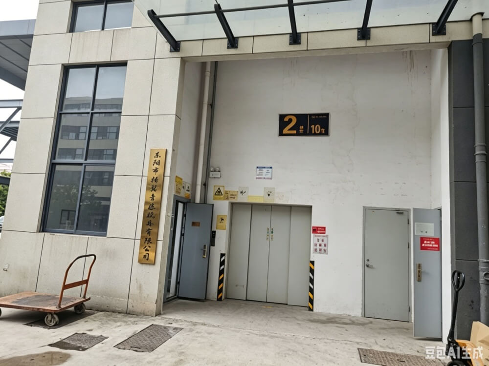
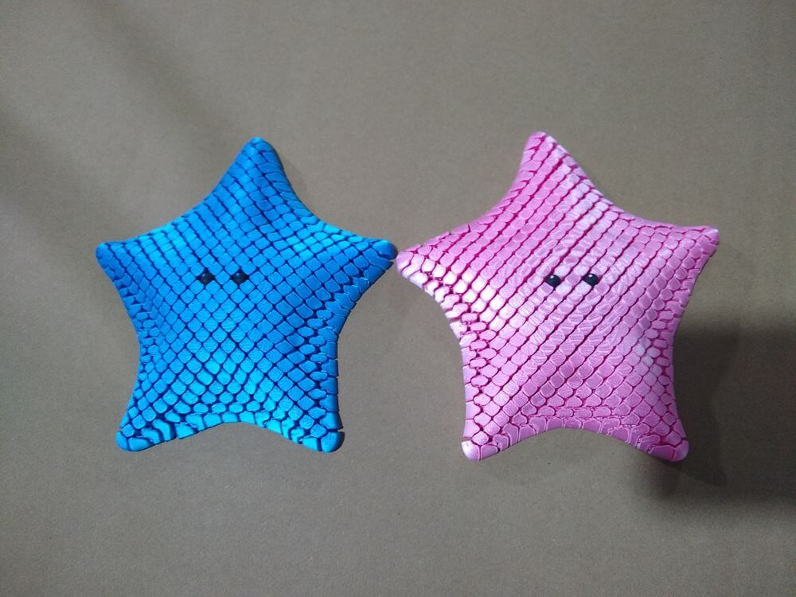
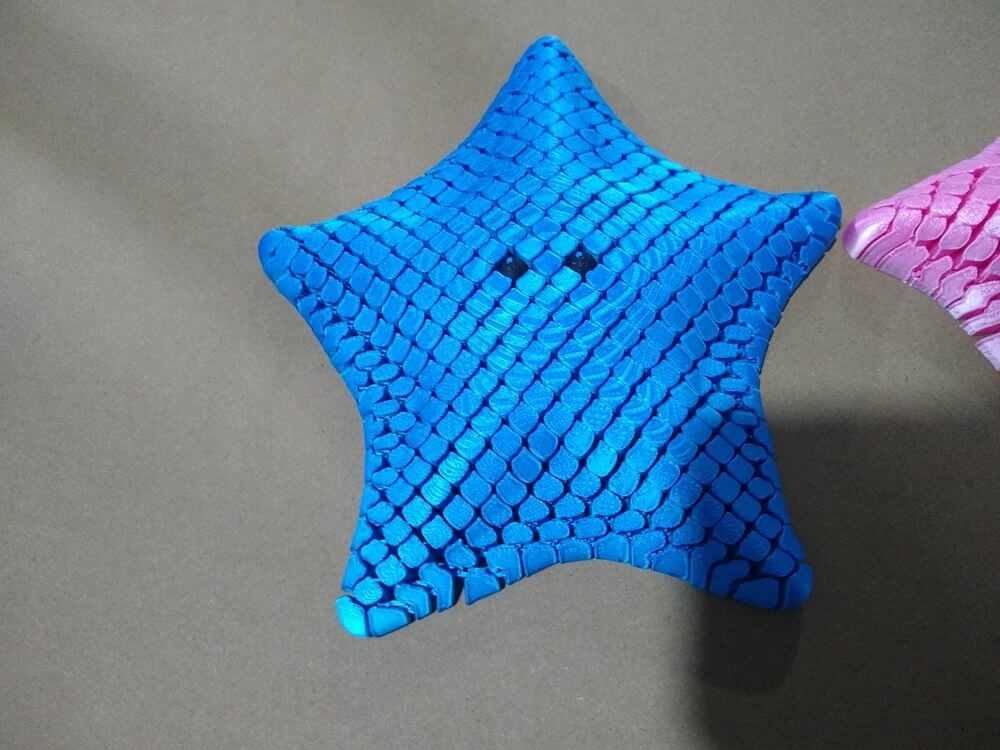
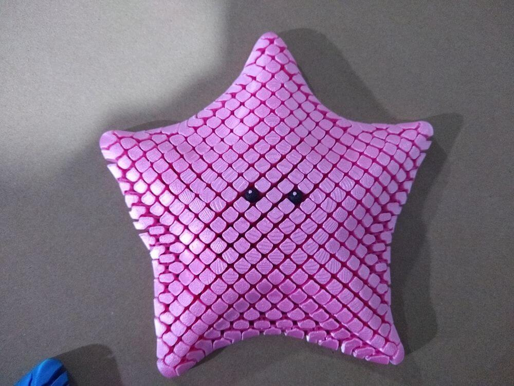
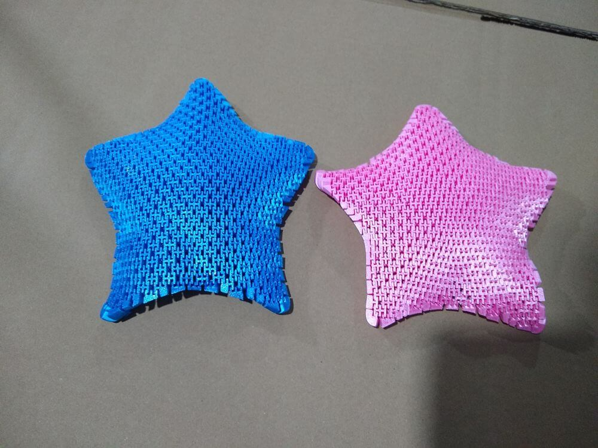
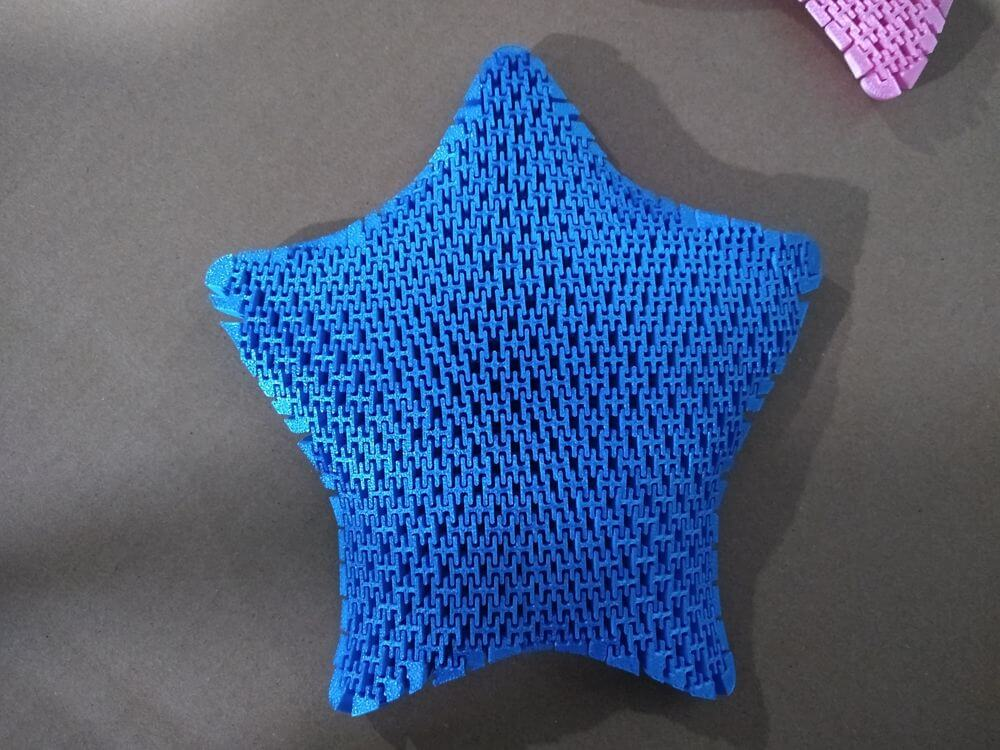
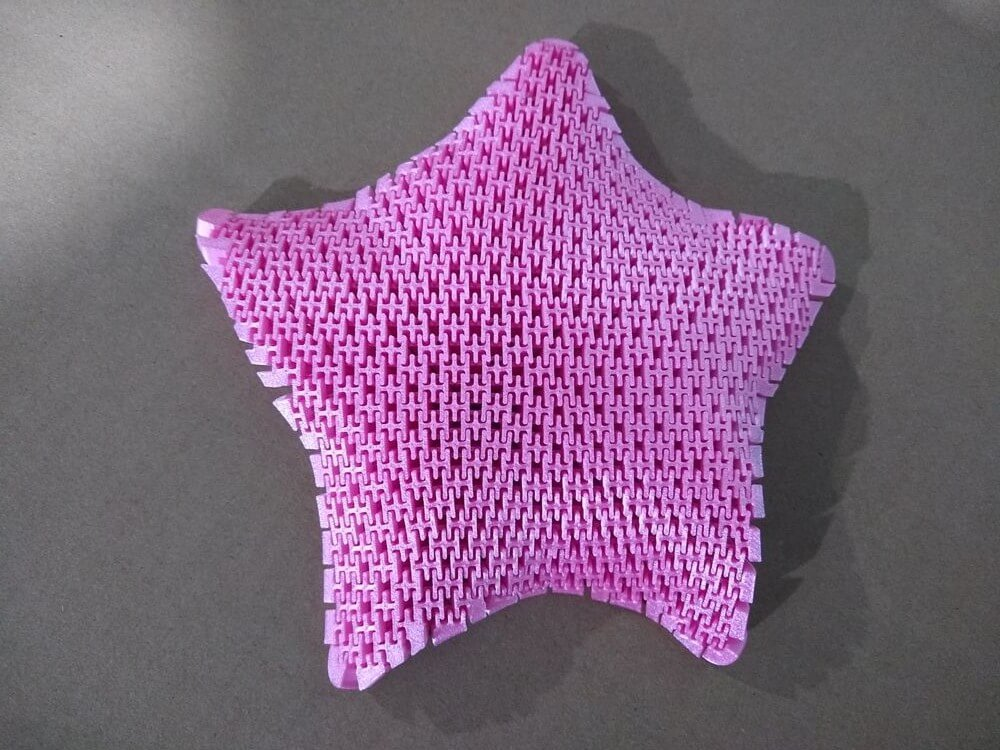
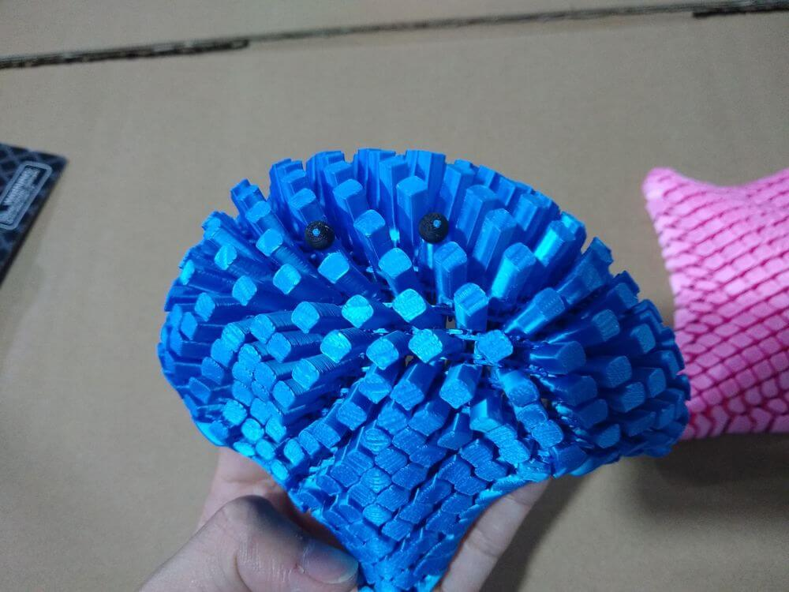
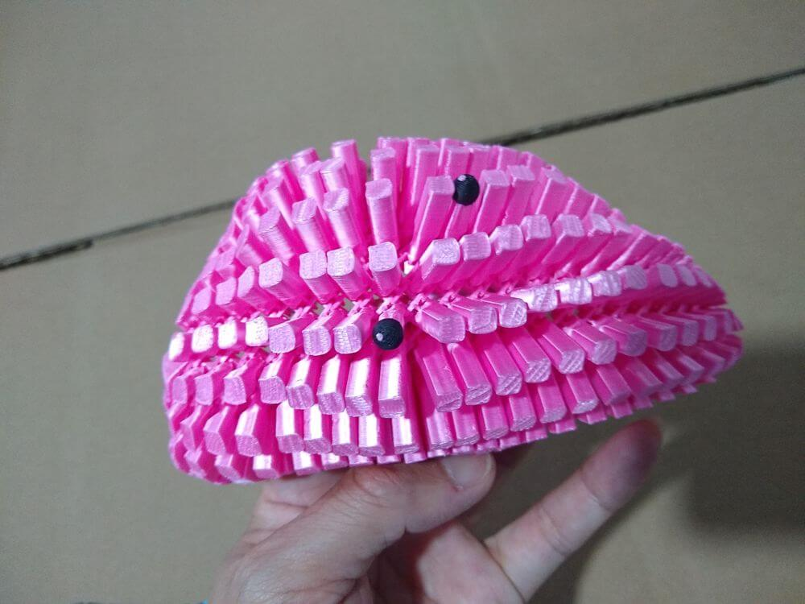

Inspector's Field Logs: 3D Printing Toy Factory in Zhejiang
We do not endorse or recommend specific vendors; instead, we compile real-world operational data captured during our on-site routines.
We conducted an on-site inspection for 3D printed fish toys at this manufacturer. Our observations indicated stable quality output. While 3D printing is a mature technology, applying it to mass-produced toys requires specific attention to detail.
Below is the objective structural data logged from this Zhejiang 3D printing toy manufacturer for international toy buyers to use as background reference.
Factory Profile Summary
| Verified Parameters | Factory Record Details |
|---|---|
| Factory Name | Qinteng Plastic Toys Factory |
| Main Products | 3D Printing toy |
| Factory Estimated Size | Middle |
| Location / Hub | Dongyang, Jinhua city, Zhejiang province, China |
| Foreign Trade Department | Domestic |
| Direct Contact | Ivy Chen, +86.152.6790.7128 |
Technical Observations on 3D Printed Toys
Since 3D printing is a layer-by-layer manufacturing process, quality control differs significantly from traditional injection molding. During our on-site inspection, our engineering checklist focused on the following areas:
- Layer Adhesion & Structural Integrity: Unlike solid molded plastic, 3D prints are prone to "delamination" (layers separating). For toys, ensure the factory uses proper infill density and print temperature settings. Test method: Perform a drop test on a sample to see if the structure holds up without cracking along layer lines.
- Surface Finish & Post-Processing: "Layer lines" are inherent to the process. Buyers should define the acceptable tolerance for surface roughness. Check if the factory performs necessary post-processing (sanding, polishing, or coating) if the design requires a smooth aesthetic finish.
- Material Safety Compliance: Ensure the factory provides documentation for the raw printing filament (e.g., PLA, PETG). Ask for non-toxic certification, especially if the target demographic is children. Do not assume all 3D printing filaments are food-safe or child-safe. Internationally, 3D printed toys should comply with standards such as EN71-1 (physical and mechanical properties), EN71-3 (migration of 19 elements), and GB 6675.4-2014 (heavy metal limits).
Operational Characteristics of This 3D Printing Toy Factory
According to our infrastructure log, this Dongyang 3D printing factory operates with a Domestic focus, meaning it primarily serves the local market.
For buyers evaluating this type of 3D printing toy manufacturer, note the following structural facts:
- Domestic Trade Focus — The factory's primary sales channel is the domestic market. Buyers should confirm their capability and experience with international orders, including export documentation and compliance with foreign toy safety standards.
- Quality Consistency — Our inspection of 3D printed fish toys indicated stable quality output, suggesting the factory has established printing parameters and quality control processes for this product type.
On-Site Production Floor Gallery
The snapshots below are unedited technical records captured by our quality inspectors, showing the manufacturing floor and the 3D printed fish toys during execution:









💡 Disclaimer: This 3D Printing toy profile is a historical record of 1 specific quality control outcome. We maintain no financial alignment, partnerships, or commercial agreements with this supplier. Every production lot varies; buyers should decide whether perform independent product inspections for their individual orders to verify current specifications.